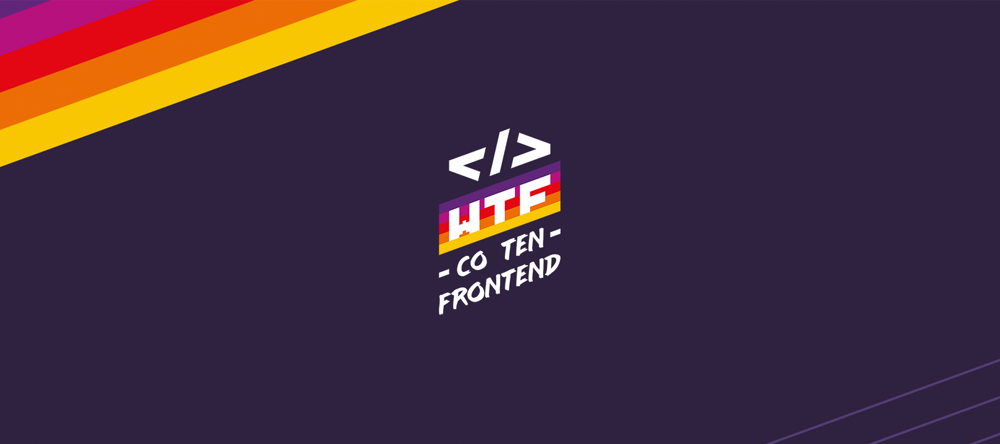

15 maja, piątek
Czas na naukę Frontendu
Zacząłem moduł trzeci. Na chwilę się tutaj zatrzymam. Pokonałem ponad połowę materiału z modułu, narazie bez notatek ale już widzę, że będzie potrzeba usystematyzowania wiedzy, może jakichś checklist, szczególnie jak zacznie się praca z pracą domową. W emocjach nadal ciekawość, lekka niecierpliwość.. no zacznijmy już coś działać. Ale też lekka obawa przed poziomami trudności i własną determinacją, czy jej wystarczy.
